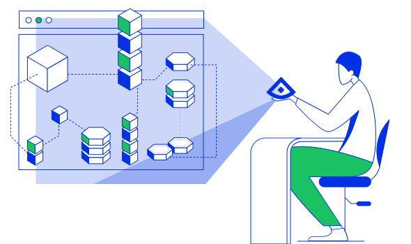

In this tutorial we will learn about Process Whitelisting, which is part of Alcide Runtime Security (ART). We will see how DevOps and/or SecOps teams can enable the detection of unauthorized or compromised processes running on pods in their kubernetes clusters.

For this tutorial you will need a Kubernetes cluster with enough permissions to deploy resources into it.
- Install and Set Up kubectl.
- Install kind, or any working Kubernetes Cluster
- Alcide Cloud Account
- A (free) user account on GitHub
- A (free) user account on DockerHub with the same username as your GitHub account

In order to implement Alcide Runtime Security features, we will need to onboard your Kubernetes cluster into your Alcide Cloud Account
- Login to your account: https://yourcompany.cloud.alcide.io
- On the left hand side menu, click on Create Data Center/Cluster
- Follow the steps in the UI wizard.
At this point you should be able to see your cluster, worker nodes, and workloads, in the Infrastructure View and the application components in your Application View

For this tutorial, we will leverage GitHub Actions to do our build actions generating the process whitelist checksum.
Since GitHub Actions run automatically when you push to a repository, you'll have to create a new repository to add the action to. Please refer to the instructions here.
Of course, if you prefer to use an existing repository that is possible as well.
Create the following file named app.py in the myapp folder:
from flask import Flask
app = Flask(__name__)
@app.route('/')
def hello_world():
return 'Hello, World!'
if __name__ == '__main__':
app.run(debug=True, host='0.0.0.0')
This is a simple Python web server that returns Hello World when opened.
Create the following file named Dockerfile in the root of the new repository:
FROM ubuntu:xenial
LABEL maintainer="yourname@organization.net"
RUN apt-get update -y && \
apt-get install -y python-pip python-dev
WORKDIR /
COPY my-app/app.py /
RUN pip install Flask
### This is the Alcide whitelist generator integration ###
ARG ALCIDE_PROCESS_WHITELIST_HASH_KEY
ENV ALCIDE_PROCESS_WHITELIST_HASH_KEY ALCIDE_PROCESS_WHITELIST_HASH_KEY
ADD https://alcide.blob.core.windows.net/generic/whitelist-generator/generator /generator
RUN chmod +x /generator &&\
/generator -k ${ALCIDE_PROCESS_WHITELIST_HASH_KEY} -i /usr/bin/python &&\
rm -f generator
### End of integration section ###
ENTRYPOINT [ "python" ]
CMD [ "/app.py" ]
This Dockerfile sets up the image for running the Python Flask application and generates a white list entry for the process we want to allow this container to run. In this case, we create a hash for /usr/bin/python because this image will run a python web server.
Create the following file named main.yml file in the .github/workflows directory in your repository:
name: CI
# Controls when the action will run. Triggers the workflow on push or pull request
# events but only for the master branch
on:
push:
branches: [ master ]
# A workflow run is made up of one or more jobs that can run sequentially or in parallel
jobs:
# This workflow contains a single job called "build"
build:
# The type of runner that the job will run on
runs-on: ubuntu-latest
# Steps represent a sequence of tasks that will be executed as part of the job
steps:
# Checks-out your repository under $GITHUB_WORKSPACE, so your job can access it
- uses: actions/checkout@v2
# Runs a set of commands using the runners shell
- name: Run a multi-line script
run: |
docker login --username ${GITHUB_ACTOR} --password ${{ secrets.DOCKER_PASSWORD }}
docker build -t ${GITHUB_ACTOR}/my-app:latest .
docker push ${GITHUB_ACTOR}/my-app:latest
env:
ALCIDE_PROCESS_WHITELIST_HASH_KEY: ${{ secrets.ALCIDE_PROCESS_WHITELIST_HASH_KEY }}
Add two secrets DOCKER_PASSWORD and ALCIDE_PROCESS_WHITELIST_HASH_KEY to the GitHub secrets.
- The
DOCKER_PASSWORDis the password of to your docker account (we recommend you use an access token instead of your main password) so the image can be uploaded to the public Docker hub. - As
ALCIDE_PROCESS_WHITELIST_HASH_KEYwe will start with an invalid key so the workload will get flagged as unauthorized - enter123abc.
By saving the workflow yaml, GitHub will automatically start running your workflow. Navigate to the output by clicking on the > Actions header item on your main repository page.
Now that we have a Docker image built and uploaded to DockerHub, we can run a kubernetes workload on the cluster you have connected to your Alcide Cloud environment.
# create an environment variable with your username so you can copy and paste the kubectl commands
export USERNAME=<yourusername>
# spin up our unauthorized workload
kubectl run --generator=run-pod/v1 process-whitelist-workload --image=${USERNAME}/my-app:latest
When we go to the Infrastructure overview in Alcide Cloud, we will see the following alert (may take 5 to 10 minutes).
Let's delete the workload and re-build the Docker image with the correct key.
kubectl delete process-whitelist-workload
The correct key for your organization can be found within the Alcide Cloud platform at Settings/Keys/Process whitelist under hash key → Show key (direct url: https://yourorganization.cloud.alcide.io/apiKey). We will use this key to generate the whitelist and later validate its authenticity in runtime.
Update the existing GitHub secret named ALCIDE_PROCESS_WHITELIST_HASH_KEY with the new value.
To kick off the build process, make an arbitrary change (like creating a README.md) and push it to the repository. Under > Actions we will see a new build job starting.
Execute the following command again:
kubectl run --generator=run-pod/v1 --image=${USERNAME}/my-app:latest
We will see the pod workload reappearing in Alcide Cloud without any alert, like so:
Let's wreak some havoc and simulate an attack on the running pod and a hacker getting shell access to the pod. We won't actually trigger a Flask vulnerability - although you could - but rather use kubectl exec to spawn a bash terminal in the container.
kubectl exec -ti process-whitelist-workload bash
Since we didn't generate a whitelist entry for bash, once we do this, the workload should get flagged in Alcide Cloud. Again, this may take several moments to show up.
You see that Process Whitelisting is useful both for detecting both unauthorized/compromised Docker container images as well as hackers compromising the running pod.
That's all folks! Get rid of the pod by running the following command:
kubectl delete process-whitelist-workload
In this codelab we covered:
- Create a Docker image with a generated process whitelist config and the correct organization key
- Deploy the container to kubernetes
- See how an unauthorized workload gets flagged
- See how an authorized workload looks